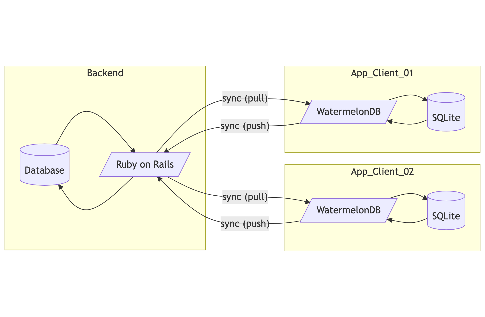
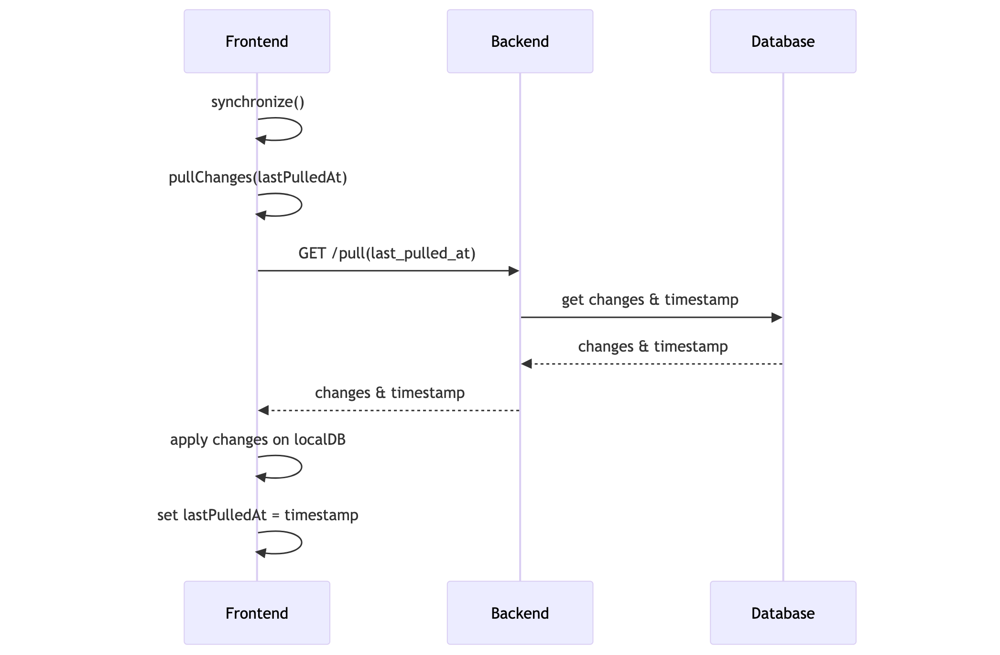
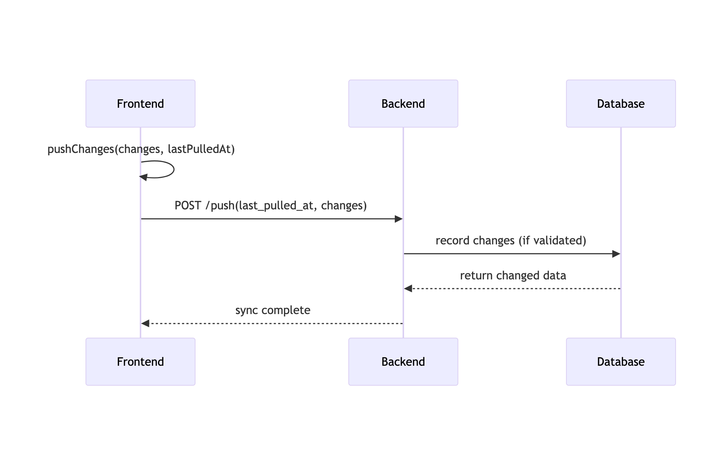

class: center, middle # Offline-first in Practice ## How Ruby on Rails Backend Supports a Mobile App --- # Who am I? .pull-left.avatar[] - Chris Wawer - Ruby on Rails Developer - https://wawer.it .w-300[] --- # Equinet by Monterail - Manages schedules, invoices, inventories, and photos - Mobile app for farriers (hoof care specialists), offline-first, written in JavaScript using React Native - Web application written in React.js - Uses WatermelonDB for local database syncing - Backend is Ruby on Rails API handling data sync and storage More details at Monterail project page: [https://www.monterail.com/projects/equinet](https://www.monterail.com/projects/equinet) --- # What is Offline-first? - Approach where the app works fully without a network connection - Data is stored and managed locally on the device - Changes sync automatically when connection is restored - Improves reliability and user experience in unstable networks --- # WatermelonDB Overview <center> </center> - High-performance reactive database for React and React Native - Built on SQLite for speed and reliability - Designed for large-scale, complex data in mobile apps (not really) - Supports optimized syncing strategies for offline-first apps More details: - [https://github.com/Nozbe/WatermelonDB](https://github.com/Nozbe/WatermelonDB) - [https://watermelondb.dev/docs](https://watermelondb.dev/docs) --- # WatermelonDB Overview <center>  </center> --- # Ruby on Rails Backend - Acts as the central data store and synchronization authority - Exposes API endpoints for syncing created, updated, and deleted data - Handles conflict resolution and data validation - Uses standard REST API for communication --- # Sync - pull <center>  </center> --- # Sync - push <center>  </center> --- # Sync - data structure ```json { projects: { created: [ { id: 'aaaa', name: 'Foo', is_favorite: true }, { id: 'bbbb', name: 'Bar', is_favorite: false } ], updated: [ { id: 'ccc', name: 'Baz', is_favorite: true } ], deleted: ['ddd'] }, tasks: { created: [], updated: [ { id: 'tttt', project_id: 'aaaa', name: 'Buy eggs' } ], deleted: [] } } ``` --- # Demo: Ruby on Rails - Simple controller handling sync requests - Accepts created, updated, deleted data from clients - Responds with changes since last sync - Enables two-way data synchronization - Handles conflict resolution and validation Source: [https://github.com/wafcio-trug-sources/rails-offline-sync](https://github.com/wafcio-trug-sources/rails-offline-sync) --- # Summary - WatermelonDB provides fast (in theory), offline-capable local data storage - Ruby on Rails backend supports centralized syncing and conflict management - Together they enable robust offline-first mobile applications